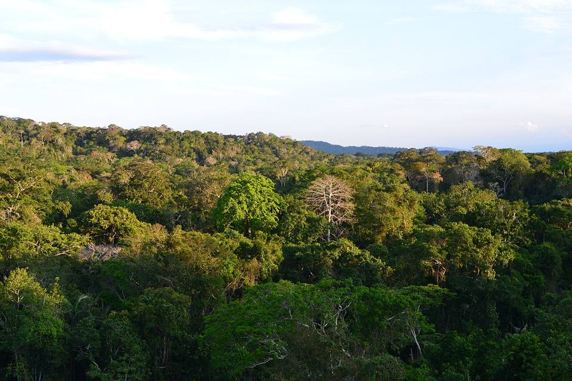
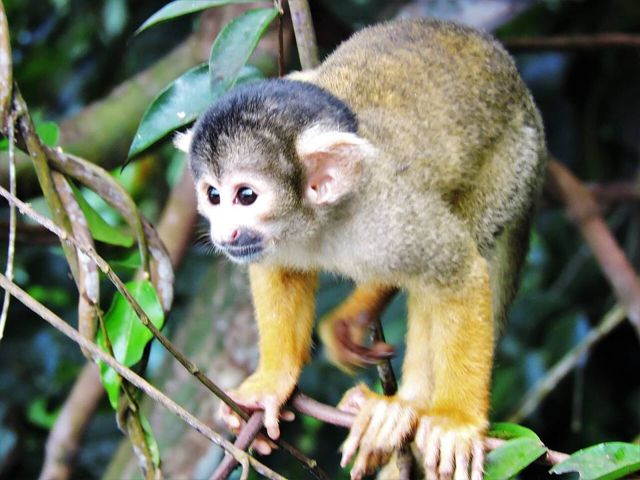
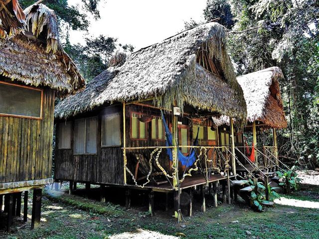
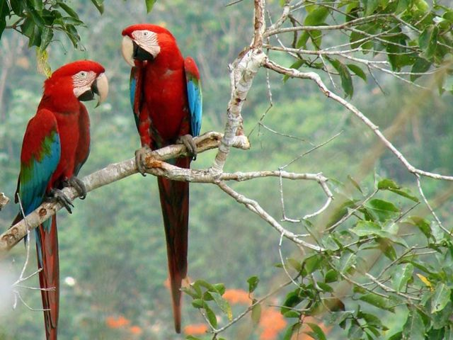
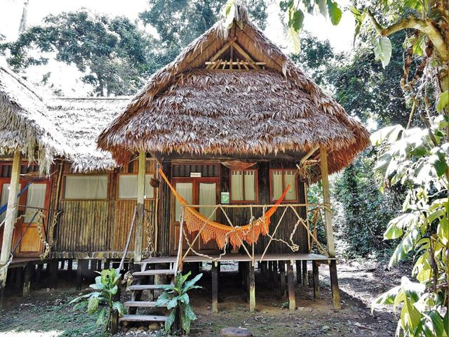
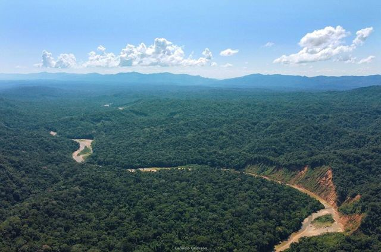
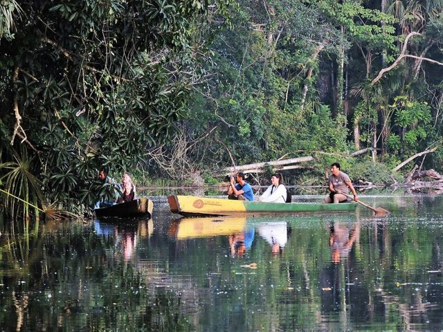

Parque Nacional Madidi
Departamento de La Paz · Selva y trópico

El parque Madidi es uno de los lugares más biodiversos del planeta. Se sube el río en canoa hasta un albergue manejado por comunidades locales y luego se camina por el bosque primario, de día y de noche, buscando monos, loros y huellas de jaguar. La Amazonía en estado puro.
300 maltura
2 a 3 díaspara quedarse
Qué hacer
- Estadía en un ecoalbergue comunitario (Chalalán, San Miguel del Bala…)
- Caminatas de día y de noche
- Parabas, monos, chanchos de monte
Qué comer
- Pescado de ríoSurubí, pacú o dorado, asados a la leña o fritos, con arroz, yuca y plátano. Deliciosos a la orilla del agua, en los Llanos y la Amazonía.
- MasacoPlátano o yuca machacados con charque o queso. Contundente y nutritivo.
Consejo. Tour de 3 días desde Rurrenabaque, en canoa por los ríos Beni y Tuichi.
Cómo llegar a Madidi
Rurrenabaque Bote · 3 a 5 h en canoa
Incluido en el tour (agencia o albergue comunitario).
Fotos de Parque Nacional Madidi

.jpg){kind=link}



.jpg){kind=link}






Otros lugares de la región
 RurrenabaquePuerta de entrada a la Amazonía boliviana, a orillas del río Beni.
RurrenabaquePuerta de entrada a la Amazonía boliviana, a orillas del río Beni. Pampas del YacumaHumedales llenos de animales: caimanes, capibaras y delfines rosados.
Pampas del YacumaHumedales llenos de animales: caimanes, capibaras y delfines rosados. Reserva Barba AzulSabanas del Beni, refugio de la paraba barba azul, uno de los loros más raros del mundo.
Reserva Barba AzulSabanas del Beni, refugio de la paraba barba azul, uno de los loros más raros del mundo. Reserva de la Biosfera del BeniSabanas, bosques y lagunas cerca de San Borja: una reserva muy rica en fauna, todavía poco visitada.
Reserva de la Biosfera del BeniSabanas, bosques y lagunas cerca de San Borja: una reserva muy rica en fauna, todavía poco visitada. Trinidad (Llanos de Moxos)Capital del Beni, llanuras inundables y cultura moxeña.
Trinidad (Llanos de Moxos)Capital del Beni, llanuras inundables y cultura moxeña. Laguna SuárezUna gran laguna tranquila a las puertas de Trinidad, para bañarse y comer pescado.
Laguna SuárezUna gran laguna tranquila a las puertas de Trinidad, para bañarse y comer pescado. San Ignacio de MoxosAntigua misión jesuítica de las llanuras del Beni, famosa por la Ichapekene Piesta (UNESCO).
San Ignacio de MoxosAntigua misión jesuítica de las llanuras del Beni, famosa por la Ichapekene Piesta (UNESCO). CobijaLa capital de Pando, a orillas del río Acre, frente a Brasil: puerta de la Amazonía del norte.
CobijaLa capital de Pando, a orillas del río Acre, frente a Brasil: puerta de la Amazonía del norte. Porvenir y el río TahuamanuPueblo amazónico cerca de Cobija: paseos en bote por el Tahuamanu y piscina natural.
Porvenir y el río TahuamanuPueblo amazónico cerca de Cobija: paseos en bote por el Tahuamanu y piscina natural. Puerto Rico y la reserva ManuripiPueblo en la confluencia de dos ríos, puerta de la reserva amazónica Manuripi.
Puerto Rico y la reserva ManuripiPueblo en la confluencia de dos ríos, puerta de la reserva amazónica Manuripi. RiberaltaPuerto amazónico en la confluencia del Beni y el Madre de Dios, capital de la castaña.
RiberaltaPuerto amazónico en la confluencia del Beni y el Madre de Dios, capital de la castaña. GuayaramerínCiudad fronteriza a orillas del río Mamoré, frente a la ciudad brasileña de Guajará-Mirim.
GuayaramerínCiudad fronteriza a orillas del río Mamoré, frente a la ciudad brasileña de Guajará-Mirim.